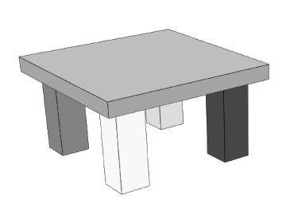

IDE-style inspect / quick-fix toolkit for SceneModel.
Catches data-integrity errors and performance / correctness
warnings, surfaces them as a structured report, and dispatches
each finding to a pluggable Fix that knows how to
remediate it. Mental model is eslint's rule registry +
IntelliJ's "fix all problems" — bring your own rules and your
own remediations; the framework wires them together.
%%{init:{"theme":"dark"}}%%
flowchart LR
A[SceneModel] --> B[inspectSceneModel]
B --> C[InspectionReport]
C --> D[applyFixes]
D --> E[ApplyFixesResult]
E -- re-inspect --> B
%%{init:{"theme":"default"}}%%
flowchart LR
A[SceneModel] --> B[inspectSceneModel]
B --> C[InspectionReport]
C --> D[applyFixes]
D --> E[ApplyFixesResult]
E -- re-inspect --> B
flowchart LR
A[SceneModel] --> B[inspectSceneModel]
B --> C[InspectionReport]
C --> D[applyFixes]
D --> E[ApplyFixesResult]
E -- re-inspect --> B
Features
Pluggable rules — Inspections registered into an
InspectionRegistry produce typed Issues; the
shipped DEFAULT_INSPECTION_REGISTRY covers structural
integrity, dangling references, geometry quality, transform
cycles, texture sanity, and more.
Pluggable fixes — Fixes registered into a
FixRegistry claim issue codes and apply remediation in
place. DEFAULT_FIX_REGISTRY ships ~20 built-ins;
last-registration-wins lets plugins override built-ins by
re-registering for the same code.
Structured byCode payloads — Issue.context carries the
strategy-readable payload (e.g. {geometryId},
{duplicates: [ids]}) so fix code never has to parse a
human-readable message.
Severity tiers — issues split into errors, warnings,
and info. Errors block downstream optimisation
(optimizeSceneModel refuses to run with any errors
present) because auto-fixing them would mask data corruption.
Opt-in expensive walks — geometry-quality / duplicate /
similarity / dense / oversize checks are off by default and
enabled via checkX flags so a default inspection stays
cheap.
Re-inspection loop — typical pipeline is
inspect → fix → re-inspect to see the post-fix state.
Orchestrator facade — optimizeSceneModel wraps the
"inspect → split oversized geometries → prune orphans" path
when callers want a one-call convenience.
Installation
npminstall@xeokit/sdk
Three core artefacts:
Issue — one finding (severity, code, message,
resourceId, structured context). The context field
carries strategy-readable payload ({geometryId},
{duplicates: [ids]}, …) so fix code never has to parse
the message.
InspectionReport — {issues, errors, warnings, info, byCode}. The byCodeMap<code, Issue[]> is the
canonical "set of issue lists" view that fix dispatch
iterates, and that the demo example (see
examples/ValidateSceneModel_Duplex) groups by in its UI.
Fix — {codes[], description, apply}. The
apply function is the fix itself; codes is the list of
issue codes the strategy claims.
Plugin registries
Both halves of the pipeline are pluggable through symmetric
registries:
FixRegistry — per-code dispatch table
applyFixes reaches into. Singleton at
DEFAULT_FIX_REGISTRY; plugins register
replacements for built-in fixes by re-registering against
the same code (last-registration-wins).
Tests / one-off pipelines build fresh registries instead and
pass them via the matching registry field on the params
object.
// Plug a strategy into the singleton — every applyFixes() call // sees it from now on. import*assceneModelInspectorfrom"@xeokit/sdk/inspect/sceneModel";
// Or build a one-off registry — leaves the default untouched. import { FixRegistry, mergeDuplicateGeometries, applyFixes, } from"@xeokit/sdk/inspect/sceneModel";
constregistry = newFixRegistry([ mergeDuplicateGeometries, // pick the built-ins you want myFix, ]); applyFixes({sceneModel, report, registry});
Last registration wins for a given code, so plugins can
override built-ins by registering after them. Use
unregister(code) to opt out.
Built-in inspections
One file per inspection under
studio/sceneModelInspector/inspections, all pre-registered into
DEFAULT_INSPECTION_REGISTRY. Each inspection groups
codes by topical concern — one walk, multiple codes — so the
file count stays low and the registration order is meaningful.
GEOMETRY_SIMILAR — fits a rigid transform via Kabsch (Horn's quaternion method) and instances each similar geometry through its referencing meshes' matrices
GEOMETRY_DUPLICATE_INDICES — drops duplicate triangles (same vertex set, any rotation / winding) from indices
Codes deliberately without a built-in fix
(MESH_DANGLING_*, MESH_NONFINITE_MATRIX, every malformed
GEOMETRY_*, TRANSFORM_CYCLE) need user judgement —
auto-fixing them would mask data corruption or silently change
semantics.
if (report.errors.length > 0) { // Errors block downstream optimisation — auto-fixing them // would mask data corruption. Surface to the user instead. for (consteofreport.errors) { console.error(`[${e.code}] ${e.message}`); } return; }
constfixResult = sceneModelInspector.applyFixes({sceneModel, report}); if (!fixResult.ok) thrownewError(fixResult.error);
// Re-inspect to see the post-fix state. constafter = sceneModelInspector.inspectSceneModel({sceneModel});
optimizeSceneModel is the broader orchestrator — runs
inspection up-front (refusing to run if any errors are
present), splits oversized geometries, and prunes orphan
resources. Use it when you want the convenience facade; reach
for inspectSceneModel / applyFixes directly when you want
IDE-style granularity (per-rule remediation, custom strategies,
partial application).

xeokit Model Inspector
IDE-style inspect / quick-fix toolkit for SceneModel.
Catches data-integrity errors and performance / correctness warnings, surfaces them as a structured report, and dispatches each finding to a pluggable Fix that knows how to remediate it. Mental model is
eslint's rule registry + IntelliJ's "fix all problems" — bring your own rules and your own remediations; the framework wires them together.Shape
Pipeline
Features
byCodepayloads —Issue.contextcarries the strategy-readable payload (e.g.{geometryId},{duplicates: [ids]}) so fix code never has to parse a human-readable message.errors,warnings, andinfo. Errors block downstream optimisation (optimizeSceneModel refuses to run with any errors present) because auto-fixing them would mask data corruption.checkXflags so a default inspection stays cheap.Installation
Three core artefacts:
Issue — one finding (severity, code, message, resourceId, structured
context). Thecontextfield carries strategy-readable payload ({geometryId},{duplicates: [ids]}, …) so fix code never has to parse the message.InspectionReport —
{issues, errors, warnings, info, byCode}. ThebyCodeMap<code, Issue[]>is the canonical "set of issue lists" view that fix dispatch iterates, and that the demo example (seeexamples/ValidateSceneModel_Duplex) groups by in its UI.Fix —
{codes[], description, apply}. Theapplyfunction is the fix itself;codesis the list of issue codes the strategy claims.Plugin registries
Both halves of the pipeline are pluggable through symmetric registries:
Tests / one-off pipelines build fresh registries instead and pass them via the matching
registryfield on the params object.Last registration wins for a given code, so plugins can override built-ins by registering after them. Use
unregister(code)to opt out.Built-in inspections
One file per inspection under studio/sceneModelInspector/inspections, all pre-registered into DEFAULT_INSPECTION_REGISTRY. Each inspection groups codes by topical concern — one walk, multiple codes — so the file count stays low and the registration order is meaningful.
GEOMETRY_NO_POSITIONS,GEOMETRY_POSITIONS_LENGTH,GEOMETRY_NORMALS_LENGTH,GEOMETRY_UVS_LENGTH,GEOMETRY_AABB_NONFINITE,GEOMETRY_AABB_INVERTED,GEOMETRY_INDICES_LENGTH,GEOMETRY_INDEX_OUT_OF_RANGE(errors)MESH_DANGLING_GEOMETRY,MESH_DANGLING_MATERIAL,MESH_DANGLING_TRANSFORM,MESH_NONFINITE_MATRIX(errors)OBJECT_DANGLING_MESH(error)TRANSFORM_CYCLE(error)MATERIAL_UNUSED,TEXTURE_UNUSED,TRANSFORM_UNUSED(warnings)TRANSFORM_IDENTITY(warning)GEOMETRY_DUPLICATE(warning, opt-in viacheckDuplicateGeometries)GEOMETRY_SIMILAR(warning, opt-in viacheckSimilarGeometries)GEOMETRY_OVER_BUDGET(warning, opt-in viacheckDenseGeometries)GEOMETRY_OVER_EXTENT(warning, opt-in viacheckLargeGeometries)GEOMETRY_ZERO_VOLUME_AABB,GEOMETRY_DEGENERATE_TRIANGLES,GEOMETRY_UNUSED_VERTICES,GEOMETRY_DUPLICATE_VERTICES,GEOMETRY_NON_WATERTIGHT,GEOMETRY_INCONSISTENT_WINDING,GEOMETRY_AABB_NOT_TIGHT,GEOMETRY_DUPLICATE_INDICES(warnings, opt-in viacheckGeometryQuality)OBJECT_FAR_FROM_ORIGIN,OBJECT_DUPLICATE_AABB(warnings, opt-in viacheckObjectStructure)TEXTURE_NPOT,TEXTURE_OVERSIZED(warnings, opt-in viacheckTextureSanity)GEOMETRY_FAR_FROM_ORIGIN(warning, opt-in viacheckGeometryFarFromOrigin)Built-in fixes
One file per fix under studio/sceneModelInspector/fixes, all pre-registered into DEFAULT_FIX_REGISTRY.
MATERIAL_TEXTURED_GEOMETRY_NO_UVS— synthesises planar UVsMATERIAL_PBR_GEOMETRY_NO_NORMALS— synthesises smooth normalsOBJECT_DANGLING_MESHMATERIAL_UNUSED— destroys the orphan SceneMaterialTEXTURE_UNUSED— destroys the orphan SceneTextureTRANSFORM_UNUSED— destroys the orphan SceneTransformTRANSFORM_IDENTITY— re-parents referencers and destroys the identity transformGEOMETRY_DUPLICATEGEOMETRY_SIMILAR— fits a rigid transform via Kabsch (Horn's quaternion method) and instances each similar geometry through its referencing meshes' matricesGEOMETRY_OVER_BUDGET— splits dense / over-budget geometries (one split per apply)GEOMETRY_OVER_EXTENT— splits large / over-extent geometries (one split per apply)GEOMETRY_DEGENERATE_TRIANGLES— drops zero-area triangles fromgeom.indicesGEOMETRY_UNUSED_VERTICES— compacts unused vertex slots, remaps indicesGEOMETRY_DUPLICATE_VERTICES— coalesces byte-identical vertex slots, remaps indicesGEOMETRY_NON_WATERTIGHT— flipsSolidPrimitive→SurfacePrimitiveOBJECT_DUPLICATE_AABB— destroys duplicate SceneObjects (detach + destroy meshes, then destroy object)GEOMETRY_FAR_FROM_ORIGIN— shifts the AABB to origin and composes the inverse offset into each referencing mesh's matrixGEOMETRY_INCONSISTENT_WINDING— flood-fill flip wrongly-wound triangles to match the seedGEOMETRY_AABB_NOT_TIGHT— re-quantises positions into a tight AABB to recover precisionGEOMETRY_DUPLICATE_INDICES— drops duplicate triangles (same vertex set, any rotation / winding) from indicesCodes deliberately without a built-in fix (
MESH_DANGLING_*,MESH_NONFINITE_MATRIX, every malformedGEOMETRY_*,TRANSFORM_CYCLE) need user judgement — auto-fixing them would mask data corruption or silently change semantics.Typical pipeline: load → inspect → applyFixes → re-inspect → render.
Putting it together
optimizeSceneModel is the broader orchestrator — runs inspection up-front (refusing to run if any errors are present), splits oversized geometries, and prunes orphan resources. Use it when you want the convenience facade; reach for
inspectSceneModel/applyFixesdirectly when you want IDE-style granularity (per-rule remediation, custom strategies, partial application).